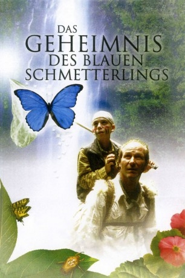

#8501 Das Geheimnis des blauen Schmetterlings
 
 IMDB-Wertung: 6.3 / 10
IMDB-Wertung: 6.3 / 10  Metascore: 0
Metascore: 0 
Der zehnjährige Pete Donato, leidet an einem Gehirntumor. Als leidenschaftlicher Schmetterlingssammler hat er einen letzten Wunsch: Er möchte ein Exemplar des mariposa azul oder Blauen Morphofalters fangen ein in den Regenwäldern Süd- und Mittelamerikas lebendes Insekt. Teresa, Petes Mutter, möchte ihrem Sohn diesen Traum erfüllen, obwohl der Junge sich nur im Rollstuhl fortbewegen kann. Mit etwas Überredungskunst kann sie den Insektenforscher Alan Osborne Hurt, für das Projekt gewinnen. So beginnt eine abenteuerliche Reise in die ebenso gefährliche wie faszinierende Wildnis...
Jahr: 2004
Dauer: 97 Minuten
FSK: 6
Land: Kanada Studio: Epix MediaTonspuren:
Untertitel:
Auflösung: 1080p (1920x1080) Größe: 6707 MB
Genre: Drama, Abenteuer
Regisseur: Léa Pool
Drehbuch: Pete McCormack
Soundtrack: Stephen Endelman
Darsteller:
 William Hurt als Alan Osborn
William Hurt als Alan Osborn- Pascale Bussières als Teresa Carlton
 Marc Donato als Pete Carlton
Marc Donato als Pete Carlton Raoul Max Trujillo als Alejo
Raoul Max Trujillo als Alejo Steve Adams als Presenter
Steve Adams als Presenter- Marianella Jimenez als Yana
- Gerardo Hernandez als Manolo
- Silverio Morales als Diego the Shaman
- Samuel Lopez als Esteban
- Liz MacRae als Press Agent
- Paul Stewart als Police Officer
- Isabel Perez als Spanish Nurse
- Denis Hylton als Doctor
- Sophie Janssens als Dancer
- Peter Trosztmer als Dancer
- Sarah Williams als Dancer
- Jane Mappin als Dancer
Datei: X:\2004(G-M)\Geheimnis des blauen Schmetterlings, Das (2004, FSK6, 1920x1080).mkv seit 12.03.2018
Festplatte: HD 2003-2004-2005(A-F)
 Es gibt insgesamt 41 Filme in der Gruppe '2004(G-M)'
Es gibt insgesamt 41 Filme in der Gruppe '2004(G-M)'